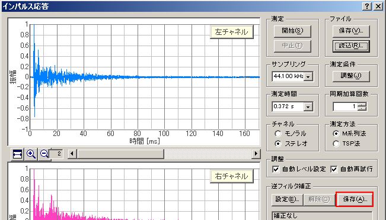
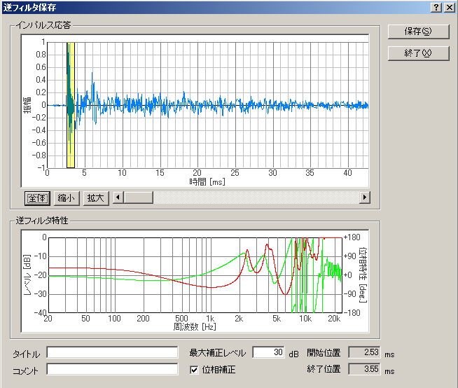
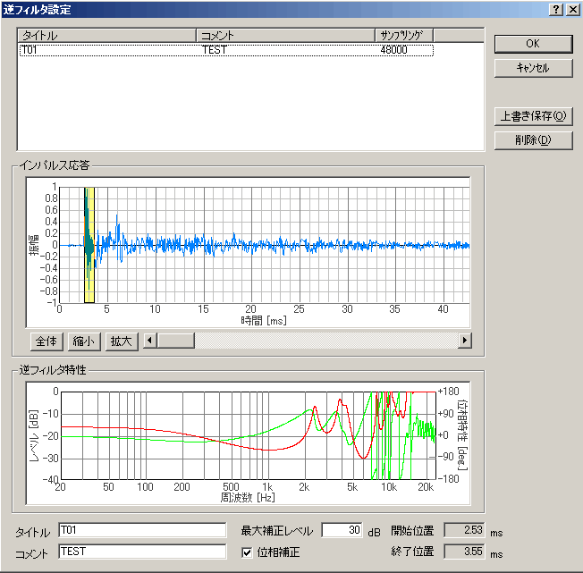

| 項目 | 説明 |
|---|---|
| インパルス応答 | 測定されたインパルス応答を表示します。測定系のインパルス応答と思われる部分を黄色の範囲に入るように黄色の左右の境界を調整してください。 |
| 逆フィルタ特性 | 切り出されたインパルス応答に対応する逆フィルタの特性（レベル：赤、位相：緑）が表示されます。 |
| タイトル | この逆フィルタのタイトルを入力します。 |
| コメント | この逆フィルタにつけるコメントを入力します。 |
| 最大補正レベル | 逆フィルタの補正のレベルを制限します。 |
| 位相補正 | ONにするとレベルと位相の両方が補正され、 OFFにするとレベルのみが補正されます。通常はONにしてください。 |
| 保存 | 逆フィルタを保存します。 |
| 終了 | このダイアログを閉じます。 |
※詳しい設定方法は、インパルス応答測定ガイド（マイク校正、逆フィルタ補正）をご覧下さい。
[設定]機能
| 項目 | 説明 |
|---|---|
| タイトル | 保存された逆フィルタのタイトルが表示されます。 |
| インパルス応答 | 測定されたインパルス応答が表示されます。変更する場合は、測定系のインパルス応答と思われる部分を黄色の範囲に入るように黄色の左右の境界を調整します。 |
| 逆フィルタ特性 | 切り出されたインパルス応答に対応する逆フィルタの特性（レベル、位相）が表示されます。 |
| タイトル | この逆フィルタのタイトルを入力します。 |
| コメント | この逆フィルタにつけるコメントを入力します。 |
| 最大補正レベル | 逆フィルタの補正のレベルを制限します。 |
| 位相補正 | ONにするとレベルと位相の両方が補正され、OFFにするとレベルのみが補正されます。通常はONにしてください。 |
| OK | 選択した逆フィルタを使用するように設定します。 |
| キャンセル | 何もせずにこのダイアログを閉じます。 |
| 上書き保存 | 変更した逆フィルタを保存します。 |
| 削除 | 選択した逆フィルタを削除します。 |